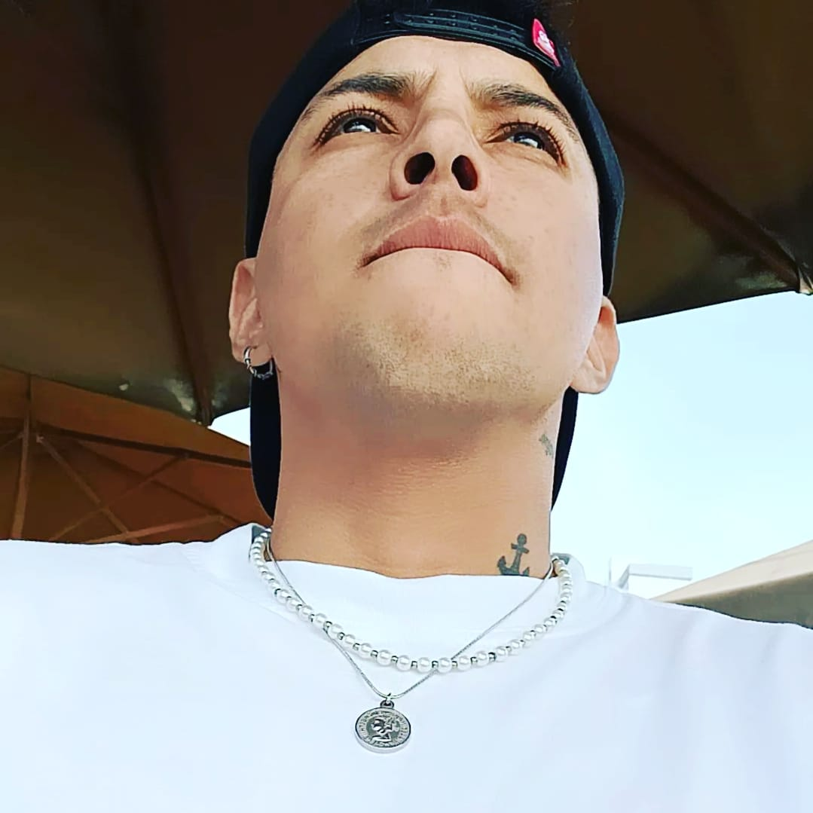

|  |
¡Hola, soy Julio! Soy un apasionado del frío y las aventuras, nacido bajo el signo de Aries. Mi carrera soñada es “Arquitectura de Interiores”, y estoy estudiándola con dedicación en la renombrada “Escuela Superior Toulouse-Lautrec”. La creatividad es mi motor, y me obsesiona la búsqueda constante de nuevas experiencias en este campo. Mi color favorito, el guinda o vino, refleja mi gusto por la elegancia y la profundidad.
Cuando llega la noche, me sumerjo en paseos nocturnos por la playa, disfrutando de la tranquilidad y la magia que la oscuridad aporta al mar. Este es mi refugio, donde encuentro inspiración y paz. |